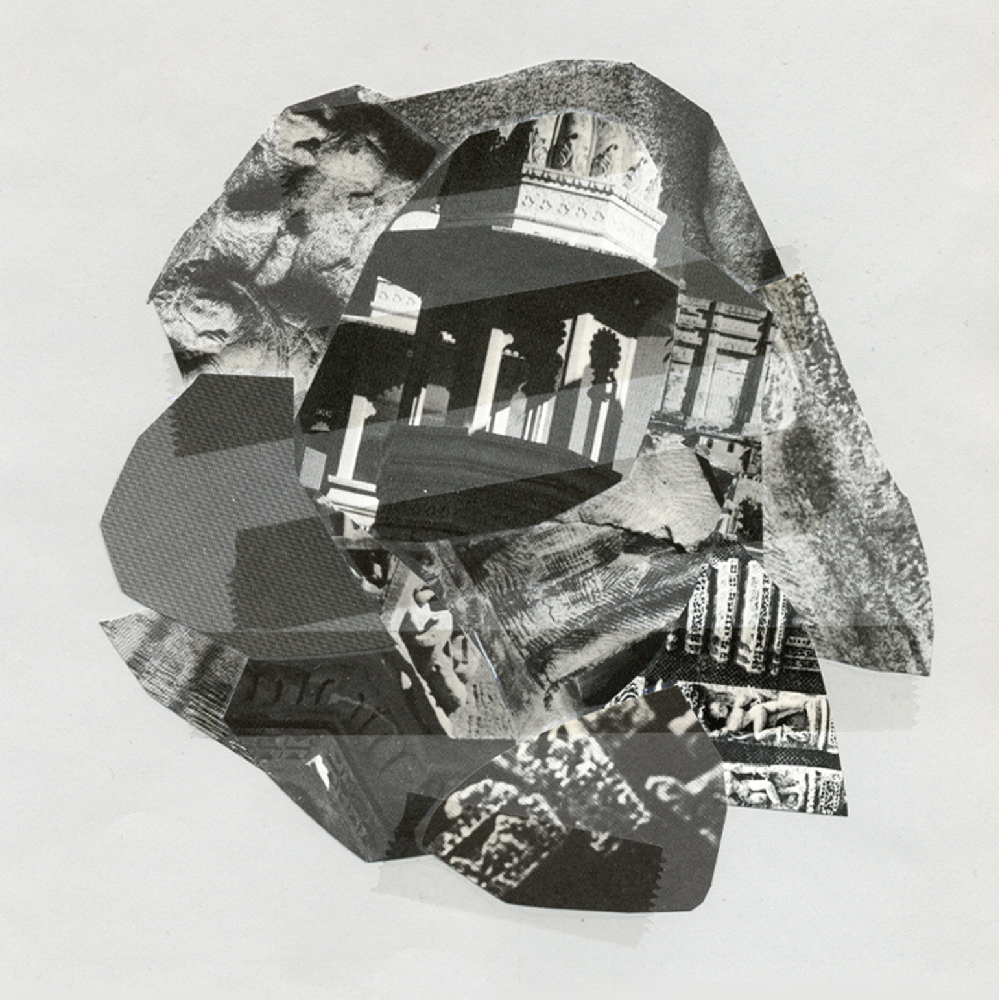

Griche est dédiée aux musiques expérimentales et improvisées
Griche produit des cassettes, à tirage limitée, faites à la main
Disponible à Montréal chez tous vos bons disquaires :
Disponible en ligne (bandcamp.com)
Cassette, 30 minutes
Édition limitée, fait main, 2017
15 septembre 2017 - Performance et lancement à 106U
Cassette, 30 minutes
Édition limitée, fait main, 2016-2017

Illustration par Louise Branchu
3 juin 2017 @ La Plante, lancement du label Griche
avec Rodrigo Velasco, Stephanie Castonguay, Emilie Mouchous, Geert-Jan et Crystalgriche
Cassette, 30 minutes
Édition limitée, fait main, 2015